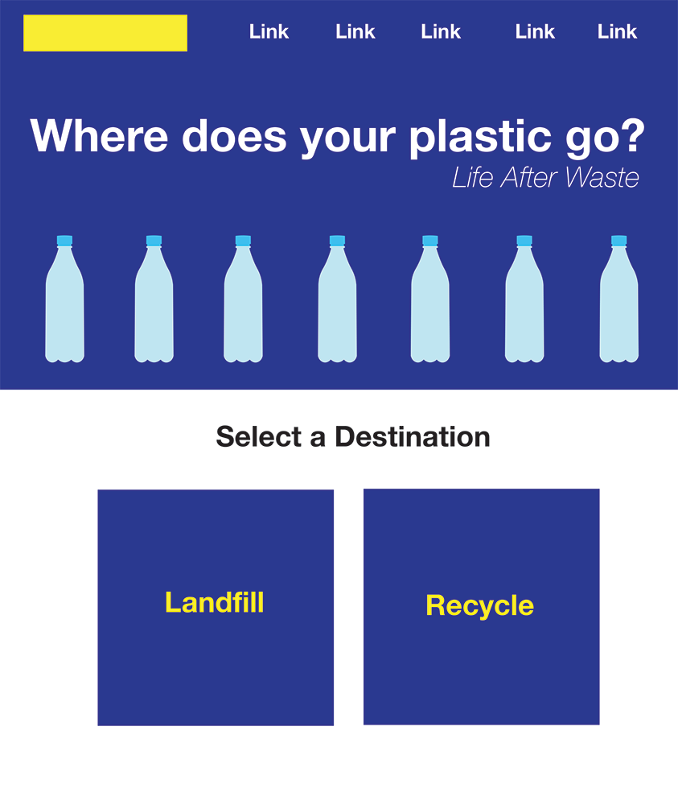

Sketches
This is simple sketch of the front page on my website about plastic pollution. Below the first section, it asks the user to select "landfill" or "recycle," and once they select how they throw their plastic away, an interactive illustration will appear. Depending on what they select, it will have different a story and outcome. I haven't made the illustrations yet, but if the user scrolls down the page, different elements will add to the story. It will go through the life cycle of the plastic bottle depending on how it was disposed. The bottom of the page will contain a message for people to reduce their plastic use, and it will also have ways the user can be greener.